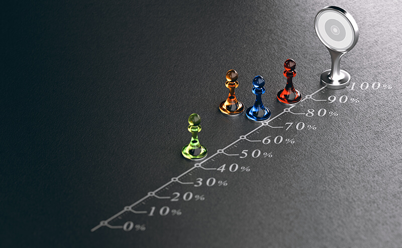

Анализ конкурентов – один из ключевых этапов подготовки к разработке или оптимизации маркетинговой стратегии, а также неотъемлемая часть удержания конкурентоспособности компании. Маркетологи изучают конкурентов наряду с рынком и целевой аудиторией, чтобы установить адекватные цены и создать действительно уникальное предложение. В этой статье разберемся, что такое анализ конкурентов, зачем он нужен бизнесу и как его делают, а затем рассмотрим пример конкурентного анализа, который будет понятен новичкам.
Что такое конкурентный анализ
Конкурентный анализ – это процесс в маркетинге, в ходе которого можно изучить и сравнить конкурирующие предприятия одной отрасли по ряду интересующих параметров.
В процессе анализа тематических конкурентов чаще всего исследуют:
- предложения, ассортимент;
- цены и принципы ценообразования;
- целевую аудиторию;
- оборот фирмы;
- прибыль бизнеса;
- каналы сбыта;
- программы лояльности, акции, специальные предложения.
В ходе анализа можно объективно оценить соперников по бизнесу, найти их сильные и слабые стороны, получить понимание об общей ситуации на рынке и разработать стратегию по преодолению конкуренции.
Наиболее масштабный конкурентный анализ делают при подготовке к запуску нового производства. Но после открытия фирмы или выхода на рынок нового продукта мероприятия по изучению конкурентных предприятий продолжаются. Это позволяет быть в курсе появления новых конкурентов, отслеживать изменения в предложениях, прогнозировать продажи, реализовывать маркетинг.
Зачем нужно проводить анализ конкурентов
Конкурентный анализ в целом нужен, чтобы понимать, с какими компаниями придется бороться за покупателя и как выиграть в этой «борьбе» с наименьшими затратами. Он показывает:
{kind=link}
- с кем вас сравнивают потенциальные клиенты и по каким критериям;
- что именно влияет на их выбор;
- по какой стратегии и насколько успешно продвигаются ваши конкуренты;
- какие у них уникальные торговые предложения (УТП);
- почему клиенты уходят к конкурентам;
- как обстоят дела на рынке.
Чаще всего бизнесу нужно сделать анализ конкурентов в трех ситуациях:
{kind=link}
- Открытие бизнеса, проекта или выпуск нового продукта на рынок. Предприниматель использует данные исследования для оценки востребованности предложений, определения рыночных цен, разделения целевой аудитории на группы.
- Удержание на рынке. В этом случае результаты анализа конкурентов нужны, чтобы понять, соответствует ли товар / услуга потребностям покупателя.
- Масштабирование. Бизнес стремится найти точки роста, определить направления, которые обеспечат расширение продаж, выход на новые рынки.
Кроме этого, анализ конкурентов помогает бизнесу:
{kind=link}
- определить и мониторить нынешнюю позицию на рынке;
- сформулировать цели маркетинга и разработать маркетинговую стратегию;
- выбрать новое перспективное направление для развития, расширения охвата и повышения прибыли;
- сделать прогноз продаж и вектора дальнейших действий;
- показать уникальность нового продукта, создать УТП и уникальный ассортимент;
- избежать чужих ошибок на будущее;
- вернуть клиентов в случае снижения продаж;
- привлечь дополнительную новую аудиторию;
- доработать или уточнить имеющуюся стратегию развития, продвижения услуги или товара, улучшить предложение, сервис, площадки для коммуникации с клиентами (например, сайт, страницы / группы в соцсетях).
Данные о конкурентах необходимы прежде всего для правильного ценообразования и маркетинга. Если поставить изначально завышенную цену на товар или услугу, клиенты найдут более выгодное предложение и уйдут к конкурентам.
Провести конкурентный анализ можно своими силами или, воспользовавшись услугами профессиональных аналитиков. В первом случае удастся сэкономить, но персональных времени и сил уйдет в разы больше, чем у специалистов маркетинга, которые сделают эту работу за деньги.
Методы анализа конкурентов
Анализ конкурентов делают по-разному. Существуют десятки способов, но в этом разделе статьи мы вкратце рассмотрим самые эффективные и простые методы анализа, применимые для классического бизнеса.
{kind=link}
SPACE-анализ
Позволяет сделать оценку стратегического положения и работы компании в настоящее время изнутри и извне. В ходе него используют большое количество параметров, по которым проводится анализ внутренней и внешней ситуации. Выделенное статистически достоверное подмножество критериев распределяется по группам, каждый из них получает весовые коэффициенты согласно заданной шкалы оценивания.
{kind=link}
Отдельно компанию оценивают по четырем критериям:
- Финансовое положение: данные о ликвидности, норме прибыли, рентабельности инвестиций, задолженностях, производственных затратах, стабильности прибыли и т. д.
- Положение на рынке и конкурентоспособность: общий объем рынка, занимаемая доля рынка с учетом динамики, структура ассортимента, взаимоотношения с клиентами, возможность активного воздействия на издержки и цены, способность к реализации маркетинговых стратегий.
- Привлекательность рыночного сегмента: уровень конкуренции, жизненный цикл, потенциал роста, возможность развития технологий и степень использования ресурсов, стабильность получения прибыли.
- Стабильность отрасли: темпы инфляции, степень технологических изменений, динамика спроса, его ценовая эластичность, влияние других участников рынка на цены, разброс цен на конкурирующие товары или услуги, социальная привлекательность сегмента и т. д.
Среднее значение рассчитывается для каждой категории параметров, результат наносится на график по данной модели. Полученный четырехугольник отражает стратегическое состояние бизнеса и служит основой для выбора той или иной стратегии развития в условиях текущего состояния рынка.
{kind=link}
Методика понятнаяqw и удобная для тех, кто ее использует, однако анализ зачастую довольно поверхностный, а рекомендации могут быть ошибочными.
PEST-анализ
Позволяет сделать анализ всех внешних факторов, которые влияют на выпуск продукции и ее сбыт. Конкурентный анализ – одна из составляющих этого метода. Окружение компании делят на две категории:
- макросреда – весь рынок региона, его экономическое положение и политические условия, природные факторы и т. д.;
- микросреда – клиенты, акционеры, инвесторы, конкуренты, партнеры и т. д.
PEST расшифровывается как “Political, Economic, Social, Technological”. Далее читайте подробнее о каждой среде.
{kind=link}
Political – в этот пункт входят все факторы влияния, связанные с политической обстановкой, например, государственная стабильность, регулирование отрасли, распределение ресурсов, законодательная и налоговая политика.
Economic – экономические аспекты влияния на бизнес, в т. ч. финансовое благополучие граждан и их покупательская способность. Здесь рекомендуем оценить инвестиционную политику, размеры налогов и уровень дефицита бюджета, проанализировать цены на энергетические ресурсы, учесть данные о доходах населения, безработице, инфляции.
Social – факторы социального характера, которые отражают потребность граждан в определенных товарах или услугах. Необходимо разобраться в предпочтениях ЦА, проанализировать качество жизни граждан в целом, распределить потребителей на группы исходя из их образа жизни.
Technological – технологические аспекты, влияющие на успешность бизнеса. Играют роль актуальные тенденции технологической сферы, достижения, инновации, которые способствуют преодолению конкуренции. В рамках анализа необходимо понять, какой примерный уровень НТП конкретной сферы, затем изучить полезные разработки конкурентных компаний, а дальше проверить и модернизировать свое производство с учетом инноваций.
К преимуществам метода можно отнести возможность построения и внедрение глобальной стратегии, быстрый сбор данных, формирование целостной картины предложений рынка и его окружения. Однако диверсифицированным организациям такой анализ проводить не так просто. Кроме этого, получать доступ к актуальной информации достаточно дорого, а повторять исследование необходимо регулярно.
SWOT-анализ
Классический и один из самых популярных методов анализа конкурентов. Сравнение с другими игроками рынка осуществляется по четырем направлениям.
{kind=link}
S (strengths) – сильные стороны. Изучают информацию о достоинствах, конкурентных преимуществах и других внутренних факторах, благодаря которым компания достигает успеха.
W (weaknesses) – слабые стороны. Набор внутренних отрицательных явлений, которые мешают фирме развиваться.
O (opportunities) – возможности. Скрытый потенциал предприятия, который можно обнаружить в процессе анализа позитивных элементов внешней среды.
T (threats) – угрозы. Внешние риски, которым подвержена компания и которые являются препятствиями на пути к достижению поставленных целей. Выявляются путем анализа негативных явлений внешней среды.
Модель представляет возможность изучить и оценить перспективы, хорошо подходит для быстрого контроля ситуации, применим для предприятий любого масштаба, но объективно рассказать о текущем положении дел не позволяет из-за субъективного мнения аналитиков.
Для развернутого SWOT-анализа в маркетинге составляется матрица решений. Она позволяет разрабатывать стратегии дальнейшего корпоративного развития.
|
Факторы |
Сильные стороны |
Слабые стороны |
|
Возможности |
Стратегия прорыва |
Стратегия переходного периода 2 |
|
Угрозы |
Стратегия переходного периода 1 |
Стратегия выживания |
SNW-анализ
Модель направлена прежде всего на то, чтобы изучить бизнес изнутри, хотя многие считают ее усовершенствованным методом SWOT. Кроме сильных сторон и уязвимостей, SNW позволяет найти также нейтральные характеристики. В том числе определить незадействованные конкурентом новые опции и позиционировать их как свои сильные стороны.
{kind=link}
Этот метод предполагает стратегический конкурентный анализ и применим преимущественно к среднему и крупному бизнесу.
Точность SNW-анализа относительная, т. к. проводится субъективная оценка факторов по шкале «плохо / нормально / хорошо», но этот метод хорош, когда стоит цель разработки стратеги развития собственного бизнеса.
Пример SNW-анализа.
|
Стратегия |
Оценка |
||
|
Слабая |
Нейтральная |
Сильная |
|
|
Инновации |
+ |
|
|
|
Каналы дистрибуции |
|
+ |
|
|
Торговая марка |
|
|
+ |
|
Денежный запас |
+ |
|
|
Метод Портера (анализ пяти сил)
Американский экономист Майкл Портер разработал свою методику конкурентного анализа. Автор предложил сделать оценку пяти внешних факторов:
{kind=link}
- Конкуренты в отрасли: количество участников рынка, потенциал роста, объемы продаж, инвестиции.
- Давление поставщиков: общее их количество, объемы ресурсов, наличие других поставщиков и возможность их замены.
- Влияние потребителей: потребности целевой аудитории, способы удовлетворения потребностей и их эффективность, скрытые потребности клиентов как основа прогнозирования изменения спроса.
- Риск появления новых конкурентов: наличие и высота входных и выходных барьеров в отрасли (например, лицензии, патенты, стартовый капитал, начальные затраты).
- Риск появления новых аналогов: наличие товаров-заменителей и оценка возможности перехода на них потребителей в случае роста цен.
Метод Портера позволяет понять позицию компании среди ваших конкурентов, со всех сторон оценить ситуацию на отраслевом рынке, а также сделать прогноз развития на несколько лет. Из недостатков – подходит только для простых рыночных структур. Анализ по данному методу делают один раз в 3-5 лет.
Сравнительный анализ конкурентов
Самый простой, но трудоемкий и достаточно субъективный способ найти и оценить преимущества конкурентов в сравнении с вашей компанией и между собой.
Для анализа необходимо определить критерии оценки, по которым вы хотите проводить сравнение. На этом этапе удобнее использовать чек-лист с вопросами или сделать готовые шаблоны, чтобы ничего не забывать. Исследование оформляется обычно в виде таблицы в Excel или графика. Оценивание происходит либо в виде «да / нет», либо в цифровом формате, например, по 10-балльной шкале.
{kind=link}
Метод не позволяет предусмотреть риски и оценить ситуацию на перспективу, анализ осуществляется только на настоящий момент.
Пример сравнительного анализа.
|
|
Мы |
Конкурент 1 |
Конкурент 2 |
Конкурент 3 |
|
Маркетинг |
|
|||
|
УТП |
Да |
Да |
Да |
Нет |
|
Позиционирование |
Да |
Нет |
Нет |
Да |
|
Фирменный стиль |
Да |
Нет |
Да |
Да |
|
Продажи |
|
|||
|
Скрипты продаж |
Да |
Да |
Нет |
Нет |
|
Персонал |
|
|||
|
Компетентность |
10 |
8 |
9 |
6 |
|
Внешний вид |
10 |
5 |
7 |
8 |
|
Приветливость |
Да |
Нет |
Да |
Да |
Концепции «4P» и «7P»
Эти две методики маркетинга предполагают сравнение конкурентов по 4 и 7 позициям соответственно. Концепция «4P» включает такие критерии:

- Product – товар или услуга.
- Price – тарифы / цены и ценовая политика в целом.
- Promotion – способы и каналы продвижения.
- Place – рынки, каналы сбыта.
В концепции «7P» добавляется еще 3 критерия:
- People – люди, влияющие на успех бизнеса: потребители, в т. ч. лидеры мнений, VIP-клиенты, лояльные группы, продавцы, рабочие и другие представители компании, производители.
- Process – процесс взаимодействия компании и потребителя.
- Physical evidence – физическое окружение, его основные цели.
Данные оформляют таблицей для наглядности, удобства отслеживания преимуществ и недостатков каждой компании, сравнения конкурентов. Каждому параметру присваиваются значения в пределах выбранной шкалы (например, от 1 до 5 или 10). В конце определяется сводный показатель по всем критериям, на основании чего делают выводы.
Матрица экрана бизнеса General Electric
Еще одно название – матрица МакКинзи. Модель предполагает анализ сильных сторон бизнеса и их сопоставление с анализом внешней среды в сфере, в которой работает фирма. Такое сравнение позволяет изучить ситуацию с конкурентами в разрезе распределения ресурсов и стратегических бизнес-единиц.
{kind=link}
Матрица представляет собой таблицу, в которой отражены факторы конкурентоспособности бизнеса и привлекательности рынка. Их находят по методу экспертных оценок. После этого строят матрицу экрана. Она позволяет отобрать бизнес-единицы для развития и успешного инвестирования. По готовой матрице определяют стратегию достижения конкретного преимущества перед конкурентами.
Матрица BCG
Это метод Бостонской консалтинговой компании, который определяет положение продуктов или бизнес-единиц в конкурентной среде. В матрице 2х2 по горизонтальной оси обозначается доля рынка, по вертикальной – темп рыночного роста. По мере роста доли рынка улучшаются позиции компании в борьбе с конкурентами. Если же увеличивается темп роста, возможности развития бизнеса также расширяются.
{kind=link}
Матрицу условно делят на 4 квадрата:
- «Звезды» – высокие показатели по осям X и Y – такие продукты нужно всячески укреплять и поддерживать, они нуждаются в значительных вложениях.
- «Дойные коровы» – высокие показатели по оси X и низкие по Y – эти товары самые прибыльные, поскольку не требуют дополнительных затрат.
- «Трудные дети» – небольшие показатели по X и высокие по оси Y – продукты требуют внимательного изучения, по возможности переведения в квадрат «звезд».
- «Собаки» – показатели по осям X и Y незначительные – неудачные продукты, которые, скорее всего, приносят мизерную прибыль или вовсе являются убыточными.
Метод бенчмаркинга
В рамках этого метода проводится сравнение деятельности компании с работой лучших на рынке конкурентных организаций. Главная цель анализа – повысить свои показатели и улучшить бизнес-процессы.
При этом необходимо:
- выявить элементы деятельности компании, благодаря которым ее выбирают клиенты в качестве поставщика;
- найти фирмы, показатели которых будут служить эталонными значениями при сравнении, определить стандарты эффективности для ключевых бизнес-процессов, уровень результативности которых будет выше, чем у эталонной компании;
- разработать последовательность выполнения мероприятий в рамках полученных идей, которая поможет подтянуть бизнес до установленных стандартов и обойти конкурентов.
Метод позволяет изучать и анализировать преимущества конкурентных организаций, связанные с поставками, расходами и качеством продукции или обслуживания.
Метод «Конкурентная карта рынка»
Он помогает объединить и распределить участников рынка с учетом их положения и роли в маркетинговом канале. Рассматриваются конкуренты, продавцы и посредники.
{kind=link}
Карта наглядно демонстрирует:
- развитость, конкурентность и другие параметры рынка;
- основных конкурентов и целевой сегмент;
- какую долю рынка занимает каждый игрок, например, можно посмотреть, какое положение занимает ваша компания относительно конкурентов.
Простая методика анализа конкурентов
Для регулярного мониторинга ситуации с конкурентами в отрасли используют метод упрощенного анализа деятельности. Здесь рассматриваем следующие вопросы:
- конкуренция в отрасли и ее прогноз (составляется конкурентная карта рынка);
- сегментация конкурентов: ключевые, прямые, косвенные;
- сравнение с прямыми и косвенными конкурентами конкретного продукта и всего ассортимента;
- ценовые стратегии и условия ценообразования;
- распределение продукта и дистрибуция;
- сформированный имидж компаний и позиционирование брендов;
- методы продвижения, каналы и бюджеты;
- целевая аудитория, осведомленность, лояльность, приверженность к продукту;
- качество персонала, технологии, другие ресурсы;
- составление SWOT-анализа, получение информации о конкурентных преимуществах.
Такой анализ рекомендуется проводить ежегодно.
Критерии сравнения конкурентов
Когда список прямых конкурентов составлен, нужно определиться с показателями, которые будем сравнивать. Их удобно разбить по направлениям бизнес-процессов. Всего критериев оценки очень много. В этой статье мы постарались привести сразу максимум возможных показателей, но выбирать актуальные пункты вам придется самостоятельно с учетом особенностей вашей деятельности.
{kind=link}
Общая информация о компании
Прежде всего соберите и изучите данные об организациях в целом:
- год основания бизнеса;
- местоположение и география деятельности;
- руководство и управление;
- количество сотрудников;
- ключевые клиенты;
- оборотные активы;
- доля рынка;
- общий объем продаж;
- ежегодный доход.
Важно не только анализировать текущее положение дел в компании, но и смотреть на перспективу, составлять бизнес-план, прорабатывать варианты дальнейшего продвижения.
Продуктовая матрица
Сам продукт и цена, по которой он продается, – самые важные вопросы, которые должны подниматься в рамках конкурентного анализа. Именно эти параметры определяют сильные и слабые стороны собственного предложения по сравнению с предложениями конкурентов.
Продукт
Анализировать товар или услугу, которую предоставляет компания, нужно максимально тщательно. Даже незначительные различия и детали могут стать толчком для обхода конкурентов. Посмотрите на такие факторы и оцените их:
- ассортимент;
- внешний вид товара;
- упаковка;
- характеристики / свойства;
- размер;
- цвет;
- срок жизни продукта;
- гарантия;
- опт / розница;
- узнаваемость.
При сравнительном анализе важно учитывать не один товар или услугу, а всю продуктовую линейку. Это поможет понять, какие у конкурентов основные и премиум-продукты, допродажи, товары-локомотивы и т.д.
Ценообразование
Стоимость – один из ключевых факторов, прямо определяющий спрос, лояльность потребителей и успех продаж. В рамках анализа ценообразования предстоит изучить:
- какие затраты включены в себестоимость;
- какая у него ценовая категория;
- какова прибыль предприятия от продажи;
- как клиенты реагируют на установленную цену;
- насколько цена определяет спрос;
- делают ли скидки, акции, специальные предложения, партнерские программы.
Получив данные о ценообразовании, можно понять, удастся ли конкурировать с конкретной компанией в цене или придется выбрать иную тактику привлечения новых клиентов.
Маркетинг
Собрать полную и достоверную информацию о стратегиях маркетингового продвижения конкурентов вряд ли удастся. Как правило, это корпоративная информация, которая не выносится за пределы фирмы. Однако узнать некоторые данные о маркетинге все же можно попытаться.
Базовый маркетинг
Прежде всего это информация о бренде:
- что он в целом из себя представляет (даже если кажется, что бренда нет как такового);
- позиционирование на рынке;
- целевая аудитория;
- каналы продаж;
- подача продукта и всей компании;
- уникальное торговое предложение (УТП);
- миссия;
- фирменный стиль.
Привлечение клиентов
Очень важно знать о том, как другие фирмы привлекают потенциальных клиентов, переводят их в реальных и удерживают. Владея этой информацией, вы сможете оставаться на шаг впереди конкурентов.
На этом этапе ключевой момент – непрерывный анализ рекламы. Для этого придется плотно поработать: найти все объявления или другие рекламные материалы, изучить и оценить эффективность каждого из них. Такую работу придется сделать по каждому конкуренту.
Работа с базой клиентов: удержание, возврат, монетизация
Привлекать новых клиентов всегда гораздо дороже, чем удерживать старых. Поэтому для рационального расходования бюджета стоит изучить и проанализировать способы, которые позволяют конкурентам эффективно работать с имеющейся базой клиентов. К таким способам можно отнести:
- коммерческое предложение;
- автоворонка продаж;
- прайс-лист;
- маркетинг-кит;
- мастер-классы онлайн и оффлайн;
- email маркетинг;
- sms-рассылки;
- POS-материалы, мерчендайзинг;
- бонусы и подарки.
Этот список может быть дополнен абсолютно любыми маркетинговыми приемами, которые помогают продавать уже имеющимся клиентам.
Интернет-маркетинг
Отдельного внимания заслуживает деятельность конкурентов в Сети. Большинство компаний стремятся повышать узнаваемость, работая со своей целевой аудиторией в Интернете. При этом не всегда речь идет о продажах, часто такая деятельность направлена на демонстрацию экспертности, привлечение внимания к бренду, повышение лояльности.
Анализ сайта
Это наиболее простой и быстрый способ проанализировать маркетинговые действия конкурентов. Здесь можно оценить следующие факторы:
- наличие блога и подкастов;
- создание и выпуск электронных книг или других информационных документов;
- проведение онлайн-семинаров, публикация видео, вебинары;
- публикация инфографик и другого визуального, мультимедийного контента;
- кейсы;
- полезная информация в разделе FAQ;
- наличие известных статей, публикации в авторитетных изданиях, интересные рассылки.
После изучения интернет-ресурсов конкурентов важно проанализировать контент платформы на предмет:
- точности и достоверности;
- грамматических и других ошибок;
- глубины освещения темы;
- наличия плана и структурированности материала;
- тона общения с читателем;
- доступности или наличия ограничений (например, платный доступ или доступ для определенных групп пользователей);
- авторства;
- уникальности и оригинальности иллюстраций.
Взаимодействие с контентом
Основной индикатор привлекательности контента – реакция пользователей на статью или пост. Ее и стоит отследить. Это значит, что на данном этапе важно узнать:
- среднее количество лайков, репостов, комментариев;
- темы, которые вызывают хороший отклик, и наоборот;
- настроение комментариев: положительное, отрицательное, смешанное;
- социальные сети, в которых пользователи активнее реагируют на контент;
- теги, которые конкуренты используют к разным фрагментам контента.
Продвижение контента, SEO
Определите, что именно делают другие фирмы, чтобы продвинуть свой контент. Обращать внимание стоит на:
- семантику;
- плотность ключевых слов на странице;
- текстовые теги, которые указаны в изображениях;
- наличие внутренней перелинковки;
- посещаемость.
При этом стоит выяснить:
- какими ключами конкуренты отмечают бизнес-моменты, которые вы еще не переняли;
- какие социальные сети активнее используют другие компании;
- какой контент более структурирован, связан перелинковкой и разделен по тегам;
- какие интернет-ресурсы не связаны с вашим сайтом, но связаны с конкурентными сайтами;
- какие лидеры мнений делятся контентом, который публикуют конкуренты;
- приходит ли на интернет-ресурс конкурентов реферальный трафик и в каком объеме.
Присутствие в социальных сетях
Немаловажный аспект – присутствие конкурентов и их рекламы в соцсетях. Социальные ресурсы представляют большую ценность в привлечении, вовлечении, повышении лояльности аудитории. Основные площадки для анализа:
- ВКонтакте;
- Одноклассники;
- TikTok
- Facebook;
- Youtube;
- Twitter;
- Pinterest;
- Instagram;
- LinkedIn;
- Snapchat.
В рамках изучения страниц и сообществ конкурентов в социальных сетях стоит акцентировать внимание на такой информации:
- количество подписчиков, читателей, фанатов;
- степень вовлеченности пользователей (пример: лайки, репосты, комментарии);
- согласованность и частота постинга;
- виральность контента.
Также важно проследить, какие материалы и статьи публикуют конкуренты, как посты влияют на конверсию, определить оригинальность / заимствование контента (делают изображения и тексты сами или используют стоковые, копируют в других сообществах) и т. д.
Продажи
Несмотря на то, что грамотно выстроенный маркетинг помогает привлечь и заинтересовать клиентов, всю остальную работу на пути к продажам в классическом бизнесе делают люди, а также специальные инструменты продаж.
Люди
Идеальный вариант для бизнеса – когда клиенты работают с компанией, а не с ее сотрудниками. Однако нельзя закрыть глаза на человеческий фактор. В ходе исследования роли людей в продажах конкурентов учитываем:
- должности сотрудников;
- регалии;
- образование;
- личные качества;
- внешний вид (например, наличие дресс-кода);
- поведение, манера общения.
Проанализировать нужно не только каждого сотрудника, но и команду конкурентов в целом.
Инструменты продаж
Речь идет о внутренних инструментах отдела продаж, с которыми не взаимодействуют клиенты напрямую, но которые используют, чтобы стимулировать продажи изнутри. К ним могут относиться:
- система мотивации персонала;
- CRM-система;
- скрипты продаж;
- отчеты;
- регулярные планерки.
Стоит заметить, что получить такую информацию самостоятельно будет достаточно сложно.
Условия и бизнес-процессы
Порядок и условия работы с клиентами не менее важны, чем качество товара или цены. Что здесь можно анализировать:
- покупка или заказ;
- возврат / замена товара;
- предоставление гарантии;
- оплата в рассрочку;
- производство;
- логистика, доставка;
- предоставление товаров под реализацию.
За счет этих параметров можно нивелировать некоторые свои недостатки или создать более привлекательное предложение, чем у конкурентов.
Подготовка к анализу конкурентов
Конкурентный анализ – трудоемкий процесс, требующий большого погружения. В некоторых нишах он может занимать довольно много времени. Перед тем, как приступить непосредственно к аналитической работе и изучить информацию о конкурентах, требуется провести подготовку. В данном случае она включает несколько этапов:
{kind=link}
- Постановка целей.
- Поиск конкурентов.
- Работа с клиентами.
- Дополнительные действия.
Далее разберем каждый из этапов подробнее.
Постановка целей
Конкурентную среду отслеживают практически все компании, которые работают ради получения прибыли. Но у каждого бизнеса свои причины, чтобы сделать подобный анализ. Вот самые распространенные цели, ради которых фирмы анализируют конкурентов:
- выявить свободные ниши рынка и занять их;
- перенять успешные исследования и разработки, которые делают другие компании;
- выделить конкурентные преимущества своего бизнеса и укрепить их;
- найти и устранить свои слабые места;
- сформировать ассортимент продукции и установить цены, учитывая нынешние тренды и текущую ситуацию на рынке;
- грамотно преподнести клиентам бренд и продукт: в соответствии с преимуществами и выгодными отличиями от других фирм.
Постановка целей всегда зависит от того, на каком бизнес-этапе находится компания. У новых организаций и уже давно работающих фирм будут разные цели проведения конкурентного анализа.
Поиск конкурентов
Формирование списка потенциальных конкурентов – это то, без чего невозможен дальнейший анализ. Среди всех компаний в сегменте рынка важно найти те фирмы, с которыми вы будете бороться за клиентов, предлагая одинаковые или аналогичные продукты. Ниже рассмотрим, где и как искать конкурентов.
- Поисковые системы. Введите ключевые запросы из своего семантического ядра в поисковиках и получите список сайтов-конкурентов, включая платную рекламу. На первой странице выдачи будут URL компаний, на которые пользователи с большей вероятностью обратят внимание.
- Товарные агрегаторы и маркетплейсы. В них можно найти поставщиков, если речь идет о продукции.
- Выставки, конференции и другие отраслевые мероприятия. Позволяют не только узнать о конкурентах, но и пообщаться с их представителями.
- Бизнес-справочники, карты: Google, Яндекс, 2GIS и подобные. Хороши в поиске региональных компаний вроде салонов красоты, стоматологий.
- Сайты отзывов и скидок. Здесь же можно почерпнуть ценную информацию для дальнейшего анализа.
- Открытые аналитические источники. Часто в них публикуют рейтинги по отраслям, делают обзоры новых товаров и т. д.
- Места продаж. Оффлайн- и интернет-магазины, где можно одновременно оценить ассортимент разных брендов и спрос на отдельные виды продукции.
- Опросы в специализированных сервисах. Мнения целевой аудитории, менеджеров по продажам, экспертов в отрасли позволяют узнать, какие игроки присутствуют на рынке, какие продукты востребованы и почему их покупают.
- Аналитические сервисы. С помощью специальных программ (например, Serpstat, SemRush, Similarweb, Spywords и др.) можно автоматически найти и оценить конкурентов.
Мы постарались привести в статье максимум способов поиска конкурентов, но, возможно, в вашей нише найдутся и другие источники.
{kind=link}
По результатам исследования составьте список возможных конкурентов.
Как определить ключевых конкурентов
После того, как список потенциальных конкурентов сформирован, делим их на 3 типа:
- Прямые – фирмы, которые работают в вашей нише, нацелены на вашу аудиторию и предлагают такой же или аналогичный продукт.
- Косвенные – конкуренты, которые подают той же целевой аудитории похожий продукт, отличающийся от вашего по характеристикам или свойствам.
- Ключевые – организации, которые сильнее других влияют на ваши продажи и деятельность, причем как в отрицательном ключе, так и в положительном.
Самые значимые конкуренты – ключевые. Их можно найти по нескольким признакам:
- конкурент нацелен на ту же аудиторию, что и вы;
- его товар решает те же проблемы потребителя, что и ваш;
- ценовая категория, в которой работает конкурент, совпадает с вашей.
Ключевыми конкурентами могут выступать не только компании, которые продают аналогичный продукт, но и организации из смежных сегментов рынка, чьи товары тоже закрывают потребности аудитории.
Распределение можно оформить в виде таблицы. При этом одна и та же компания может иметь одновременно разные статусы.
|
Конкуренты |
Ключевой |
Прямой |
Косвенный |
|
Конкурент 1 |
+ |
+ |
|
|
Конкурент 2 |
+ |
|
+ |
|
Конкурент 3 |
|
|
+ |
|
Конкурент 4 |
+ |
+ |
|
{kind=link}
Теперь оцените силу каждого конкурента по следующим критериям:
- доля рынка (насколько масштабный бизнес);
- поддержка (места продаж, пресса, ТВ, радио и др.);
- известность торговой марки.
Игроков, которые имеют высокие показатели по этим критериям, можно считать сильными конкурентами.
{kind=link}
Работа с клиентами
На этапе подготовки к анализу конкурентов нужно провести плотную работу с целевой аудиторией. В рамках этого будем собирать следующую информацию:
- что потенциальным клиентам известно о вашем продукте и предложениях конкурентных компаний в целом;
- насколько хорошо осведомлены потребители о качестве, характеристиках, свойствах продукта;
- насколько лояльна аудитория.
Получить эту информацию можно, организовав опрос потенциальных потребителей оффлайн, на сайте, в социальных сетях.
Дополнительные действия
Кроме перечисленных мероприятий, подготовка к конкурентному анализу требует дополнительных действий. Необходимо:
- четко сформулировать цели и возможности, которые будут получены по итогам анализа конкурентов;
- определить глубину исследования, что особенно актуально для ниш с десятками конкурентных организаций;
- ввести ограничения на доступные ресурсы, чтобы сфокусироваться на ключевых факторах и наиболее прибыльной ЦА.
Все это даст возможность грамотно подойти к анализу конкурентов и получить желаемый результат для бизнеса с минимальными вложениями.
Этапы проведения анализа конкурентов
Когда вся информация собрана, можно приступать непосредственно к анализу конкурентов. Эту многоуровневую работу удобно разбить на этапы.
{kind=link}
Этап 1. Оценка общего уровня конкуренции в отрасли
Первая стадия анализа предполагает изучение информации и сбор данных о каждой конкурентной компании. Чем выше конкуренция в определенном сегменте, тем быстрее меняется ситуация на рынке, сложнее найти и занять свободную нишу, выше риски.
Ключевые вопросы этапа
- Какое количество игроков присутствует на рынке?
- Какой спрос на их продукцию или услуги?
- Насколько интенсивно растет рынок?
- Какая динамика появления новых товаров и продуктовых групп в сфере?
Важно сделать следующие выводы:
- насколько интенсивная конкуренция наблюдается в отрасли;
- как ее ужесточить;
- спрогнозировать изменение ситуации на рынке в ближайшие несколько лет.
Удобно оценить конкурентов по ряду критериев поможет следующая таблица.
{kind=link}
Оптимально использовать данные за 3-5 лет, но при их отсутствии достаточно будет исследовать 1-2-годичный период. Главное – понять направление движения бизнеса и составить верные прогнозы.
Этап 2. Карта конкурентов
Карта конкурентов – инструмент, который помогает распределить участников рынка по степени значимости и выделить конкурентов, в большей степени определяющих направление отрасли. Именно последние будут выступать в качестве примеров успешных стратегий.
{kind=link}
Основные вопросы
- Какую долю рынка занимает компания?
- Какой темп роста продаж демонстрирует конкурент?
Чтобы построить карту конкурентов, нужно:
- Узнать долю рынка и темп роста продаж по каждому конкуренту.
- Построить график, где по горизонтальной оси будет доля рынка, по вертикальной – темп роста.
- Точками на графике отметить каждого вашего конкурента.
{kind=link}
Местоположение компании на карте определяет ее значимость на рынке. Так, например:
- предприятия с высоким темпом роста и значительной долей рынка имеют наибольший авторитет и в целом задают правила игры;
- фирмы с невысоким и даже отрицательным темпом роста дают хорошую базу для развития бизнеса;
- у организаций с высоким показателем темпов роста можно почерпнуть перспективные техники продаж.
Таким образом, конкуренты являются помощниками при выборе перспективного вектора развития.
Этап 3. Сравнительный анализ портфеля
Стоит задача определить состав портфеля конкурентных компаний и сравнить его со своим.
{kind=link}
Что выясняем
- Какие товары, услуги предлагает компания?
- Какие направления являются для фирмы ключевыми?
- Какие продукты являются лидерами в каждой товарной категории?
Результаты сравнительного анализа удобно отображать таблицей, где для каждого конкурента отмечены соответствующие товарные группы, в т. ч. ключевые направления бизнеса.
Ключевые направления – это те продуктовые линейки или товарные категории, которые лучше всего продаются и благодаря которым компания получает наивысшую долю прибыли.
Отдельное внимание стоит уделить хитам продаж конкурентов. Их нужно определить для каждой товарной категории и сравнить со своей продукцией. Здесь важно провести анализ основных свойств товаров или услуг. Для этого подойдет 5-балльная шкала, где 0 баллов значит отсутствие свойства, а 5 баллов – лучшую оценку.
{kind=link}
Объективно оценить свойства продуктов всех компаний можно, проводя слепые тесты и опросы покупателей. Наглядно демонстрирует результаты специальный инструмент – «многоугольник характеристик товара».
{kind=link}
Этап 4. Сравнительный анализ цен
Ценам уделяется особое внимание при анализе конкурентов, поскольку это один из определяющих критериев выбора в большинстве отраслей.
Что предстоит узнать на этой стадии
- К какой ценовой категории относится фирма?
- Какая цена самая низкая, самая высокая и средняя?
В первую очередь распределяем всех своих конкурентов по ценовым сегментам:
- низко-ценовой или бюджетный сегмент;
- средне-ценовой;
- высоко-ценовой;
- премиум-сегмент.
Отразить это распределение можно в таблице.
{kind=link}
Теперь необходимо определить средний ценовой диапазон, а также крайние верхнюю и нижнюю ценовые границы, в которых работает каждый конкурент. Результат этого исследования также можно отобразить в виде таблицы.
{kind=link}
Этап 5. Сравнение дистрибуции продукта
На этом этапе сравниваем свой продукт и товары конкурентов с точки зрения того, как их видит и оценивает покупатель на полках определенного магазина.
Ключевые вопросы
- На каких торговых площадках представлен товар оффлайн и онлайн?
- Насколько хорошо выложен и показан товар вашей компании и конкурентов?
- Какую долю полки занимает продукт?
В данном случае торговыми площадками могут выступать гипер- и супермаркеты, небольшие магазины, аптеки, рыночные точки, прямые каналы продаж, сайты в интернете.
Важно взглянуть на выложенный товар глазами клиента: допустим, как он его видит на полке или на странице сайта, по каким параметрам сравнивает с аналогичными товарами конкурентов. Отдельно нужно обратить внимание на то, какую долю полки занимает конкретный товар в сравнении с конкурентами. Результаты исследования отражаем в таблице.
{kind=link}
Этап 6. Позиции компаний на рынке
Предстоит проанализировать, какой характер имеет продукция в глазах покупателя, как он воспринимает товар и относится к нему.
Здесь важно определить
- Насколько известен продукт среди покупателей?
- Насколько он дорогой или дешевый в сравнении с конкурентами?
- Какой уровень качества товара / услуги?
- Продукция специализированная или предназначена для широкого круга потребителей?
- Какую основную выгоду от продукта получает покупатель или какое у него прямое назначение?
Ответы на эти вопросы можно наглядно отобразить с помощью инструмента «карта восприятий».
{kind=link}
Также на этой стадии стоит собрать данные об обещаниях конкурентов, уровне лояльности покупателей и другую важную информацию, которая касается восприятия и позиционирования бренда.
{kind=link}
Этап 7. Сравнение рекламы и методов продвижения
Информация, собранная на этом этапе, поможет грамотно сформировать медиастратегию и стратегию обхода конкурентов.
Два главных вопроса
- Какие инструменты прямого продвижения использует компания?
- Как фирма продвигается в социальных сетях и медиа?
В первом случае проводится анализ и сравнение BTL-программ. Нужно определить, какие акции, бонусы, программы лояльности, скидки имеют успех и реально помогают бизнесу обходить конкурентов.
{kind=link}
В рамках второго вопроса есть два способа сбора информации:
- краткий: формат рекламы, короткое описание нюансов размещения рекламы;
- подробный: с отражением данных об охвате, поддержке, точном бюджете на рекламу и т. д.
Отдельное внимание стоит уделить анализу макетов рекламных объявлений. Их сравнение поможет получить информацию о стратегиях убеждения клиентов и ключевых клеймах.
{kind=link}
Этап 8. Описание портрета потребителя
Невозможно анализировать конкурентов без учета целевой аудитории. Ключевой потребитель определяет стратегические и тактические действия по продвижению продуктов.
Нужно ответить на вопросы, которые помогут составить образ потенциального клиента. Например:
- Какой пол и возраст покупателей?
- Какой у них средний доход и платежеспособность?
- Насколько аудитория заинтересована в продукте?
- По каким критериям потребитель его выбирает?
Параметров может быть много, и для каждой сферы они свои.
{kind=link}
Этап 9. Анализ технологического уровня компаний
Технические возможности и уровень технологий конкурентов – один из аспектов, значительно влияющих на разработку маркетинговой стратегии.
Примеры ключевых моментов
- Какой уровень технологичности компании в целом?
- Какие новые технологии использует фирма?
- Есть ли патенты, собственные разработки, авторские права и т. д.?
- Имеет ли предприятие доступ к ограниченным ресурсам?
- Какую квалификацию имеет персонал?
Необходимо оценить все критерии, которые способствуют развитию конкуренту.
{kind=link}
Этап 10. Оценка конкурентных преимуществ
Когда все данные собраны и по каждому этапу сделан вывод, нужно провести общую оценку конкурентов. Для этого используются описанные выше методы. Чаще всего используют SWOT-анализ.
По каждому конкуренту нужно выделить сильные и слабые стороны, а также определить возможности и угрозы. По итогам проводится сравнение своих показателей с конкурентами.
{kind=link}
Как анализировать конкурентов офлайн
Анализ конкурентной среды офлайн в целом очень схож с алгоритмом, рассмотренным в предыдущем разделе статьи, но имеет свои особенности. Давайте разберем, на что стоит обращать внимание в процессе анализа конкурентов для бизнеса оффлайн.
{kind=link}
Местоположение:
- где находится компания территориально (например, Москва, станция метро Таганская);
- расположена ли фирма и ее отделения в проходном месте или месте массового скопления людей;
- насколько удалена от места идеального расположения;
- удобно ли потребителям добираться до офиса или магазина.
График работы:
- часы работы в будние, выходные, праздничные дни;
- есть ли перерывы;
- успевают ли потребители посетить офис или магазин до/после работы;
- как относятся к клиентам, пришедшим за 5 минут до закрытия.
Заметность:
- есть ли вывеска и другие опознавательные знаки;
- заметны ли они прохожим и людям, проезжающим мимо, которые не ищут данную компанию;
- насколько выделяется вывеска на фоне других, расположенных рядом;
- какие дополнительные инструменты привлечения внимания использует фирма, например, выносные стенды, интерактивные меню, бегущие строки и т. д.
Клиентский сервис:
- степень клиентоориентированности;
- какая манера общения с клиентами персонала всех уровней: от директора департамента до грузчиков;
- насколько грамотно менеджеры принимают решения в конфликтных ситуациях;
- умеют ли сотрудники хорошо вести диалог;
- оказывают ли клиенту помощь в подборе продукта;
- насколько внимателен персонал при сопровождении сделки.
Телефонные звонки:
- легко ли дозвониться в компанию;
- как быстро отвечают на звонки;
- есть ли многоканальный телефон или номера для прямых звонков в разные отделы (примеры: технический, сервисный, бухгалтерия и т. д.);
- насколько сотрудники заинтересованы в решении проблемы клиента;
- какие вопросы задают и что делают, чтобы перевести покупателя на новую стадию продаж;
- сколько длится телефонный разговор.
Офис:
- есть ли POS материалы в свободном доступе;
- сколько менеджеров в отделе продаж;
- насколько соблюдается дисциплина и субординация в коллективе;
- общий уровень профессионализма персонала;
- как быстро и качественно сотрудники делают свою работу.
Договор:
- заключает ли фирма письменный договор;
- есть ли возможность внести изменения в договор;
- соблюдаются ли условия строго;
- как компания выходит из ситуации в случае несоблюдения условий договора.
Данные по многим параметрам в офлайне можно получить, став тайным покупателем. Провоцируя различные ситуации, можно узнать, как компания и ее сотрудники реагируют и ведут себя по отношению к клиенту.
Анализ товаров конкурентов
Предложение компании – это то, что оценивает потребитель одним из первых, поэтому маркетологи и аналитики тоже уделяют ему максимум внимания.
Именно продукт интересен покупателю. Именно на нем строится конкурентоспособность бизнеса. Плохо оказанная услуга или некачественный товар может перечеркнуть все усилия по продвижению.
Важно посмотреть на продукт со всех ракурсов, выявить его уникальность, сильные и слабые стороны, отличия от аналогов и при этом не упустить ни одной детали.
Вот список параметров, по которым нужно сравнить продукцию конкурентов:
{kind=link}
- ассортиментный ряд;
- внешний вид;
- размеры;
- упаковка, фасовка;
- характеристики, функционал, свойства;
- варианты расцветки;
- форматы продажи;
- гарантийное сопровождение;
- срок годности или эксплуатации;
- узнаваемость бренда, известность торговой марки.
Согласно этому набору критериев нужно проанализировать и оценить всю матрицу продукции каждого конкурента. Это позволит выделить из нее основные продукты, топы, допродажи. Практика показывает, что в некоторых случаях огромная доля прибыли приходится на совсем неожиданные продукты.
Оформлять анализ товаров конкурентов удобно в виде таблицы или графика. Главное, чтобы данные были представлены упорядоченно и наглядно, чтобы с информацией было легко работать в дальнейшем.
Как провести анализ сайта конкурентов
Исследуя сайт конкурентов, вы получаете ценную информацию о том, над чем стоит поработать для улучшения своего ресурса. В ходе анализа можно не только понять, в чем ваш сайт преуспевает, а по каким параметрам отстает, но и подсмотреть интересные решения, какие-то фишки, заметить, каким аспектам бизнеса конкурент уделяет мало внимания.
Анализировать стоит не менее трех сайтов. При этом в большинстве случаев можно обойтись без платных сервисов. Наблюдательности достаточно, чтобы ответить на ключевые вопросы в ходе анализа.
Отчет удобно оформлять в виде сводной таблицы, а для оценки сайтов используют балльную шкалу, например, от 0 до 10.
|
Параметры |
Конкурент 1 |
Конкурент 2 |
Конкурент 3 |
Конкурент 4 |
Конкурент 5 |
Мой сайт |
|
Параметр 1 |
|
|
|
|
|
|
|
Параметр 2 |
|
|
|
|
|
|
|
Параметр 3 |
|
|
|
|
|
|
|
Параметр 4 |
|
|
|
|
|
|
Что и как анализировать
Ниже мы приводим довольно большой перечень критериев, по которым можно оценить сайты конкурентов. Возможно, какие-то для вас будут лишними или, наоборот, придется добавить дополнительные параметры для проверки.
{kind=link}
- Бизнес-модель. Общее впечатление о том, насколько сайт соответствует нужному вам направлению бизнеса.
- Доменное имя. Насколько легко запоминается и произносится домен, ассоциируется ли с деятельностью компании, названием бренда или продуктом.
- Наполнение. Хорошо ли контент отражает работу конкурента, есть ли информация о продуктах, насколько она интересно и грамотно подана. Сможет ли клиент, попав на сайт, получить ответы на все свои вопросы и перейти на целевые страницы для дальнейшего просмотра.
- Визуал. Это изображения, фотографии, видео. Нужно оценить их соответствие теме, качество, оригинальность, размеры.
- Интерактивность. Есть ли на сайте инструменты, с которыми можно взаимодействовать онлайн (примеры: калькуляторы, опросы, виджеты и т. д.), насколько хорошо они работают и помогают пользователю.
- Юзабилити. Насколько понятная навигация по сайту, удобно ли взаимодействовать с его элементами.
- Коммуникация с клиентом. Степень вовлеченности компании в общение с потенциальным покупателем. Предусмотрены ли инструменты коммуникации и обратной связи (примеры: чат-боты, форма «оставьте отзыв», ответы на вопросы), как работают с ними менеджеры.
- Социальные факторы. Есть ли ссылки на страницы и группы в соцсетях, ютуб-канал, мессенджеры.
- УТП. Есть ли уникальное торговое предложение и насколько хорошо его используют, чтобы отстроиться от конкурентов.
- Мотивационные элементы. Побуждает ли содержание сайта совершать какие-либо конверсионные действия. Есть ли призывы (заказать, позвонить, подписаться на новости), формы и кнопки CTA, достаточно ли их, чтобы пользователь не забыл, что делает на сайте.
- Возврат пользователя. Насколько ресурс располагает к тому, чтобы покупатель решил вернуться на него для повторных покупок.
- Разделение потребителей на категории. Есть ли на сайте отдельные страницы или предложения для каждой подгруппы ЦА.
- Безопасность. Является ли сайт безопасным (протокол https), гарантирует ли сохранность личной информации посетителя.
- Дизайн. Хорошо ли он сделан в целом, ассоциируется ли цветовая гамма с товаром или деятельностью фирмы, все ли элементы сервиса сочетаются друг с другом.
- Соответствие ожиданиям. После попадания на сайт хочется ли реализовать ту цель, с которой пользователь на него пришел.
- Техническая сторона. Как быстро загружаются страницы, нет ли ошибок и битых ссылок, корректно ли отображается контент, предусмотрена ли мобильная версия или адаптивность сайта.
Лучше всего заполнять таблицу после того, как вы просмотрели все сайты конкурентов. Это поможет оценить их наиболее объективно в сравнении друг с другом.
Оценка SEO
Анализ сайтов конкурентов необходим не только для маркетингового продвижения, но и для SEO. Чем лучше ранжируется ресурс, тем больше шансов получить клиента.
SEO-анализ позволяет:
- оценить перспективы конкурента в плане SEO и понять, почему он занимает определенное место в поисковой выдаче;
- разработать правильную иерархию веб-страниц и составить план последовательного развития структуры сайта;
- выбрать стратегию укрепления ссылочного профиля и линкбилдинга;
- выделить и внедрить на своем ресурсе коммерческие факторы, которые особенно важны для бизнеса.
В ходе SEO-анализа стоит оценить сайты конкурентов по следующим критериям:
- позиции в поисковой выдаче по конкретным ключевым запросам;
- семантическое ядро;
- источники трафика;
- технические параметры;
- поведенческие факторы.
Для полноценной оценки сайтов с точки зрения SEO понадобятся специализированные сервисы и онлайн-инструменты. Большинство из них бесплатные и позволяют собрать нужную информацию без дополнительных затрат. С помощью таких сервисов можно получить следующие данные:
- ключевые запросы, по которым хорошо ранжируется конкурентный ресурс;
- посещаемость сервиса;
- продолжительность визитов;
- количество просмотренных страниц;
- число отказов;
- источники трафика, включая географическую привязку;
- процент органического, платного, реферального трафика;
- мета-данные;
- параметры содержимого страниц: мета-описания, заголовки H1-H6, внутренние ссылки и т. д.;
- категории интересов ЦА;
- приоритетные соцсети для привлечения посетителей;
- связанные мобильные приложения;
Все данные анализа, кроме семантического ядра, рекомендуется оформлять в виде сводной таблицы для наглядности и удобства сравнения.
Анализ конкурентов в социальных сетях
Одна из важнейших частей анализа конкурентов – оценка присутствия и методов продвижения бизнеса в социальных сетях. Найти нужные компании в соцсетях можно с помощью соответствующих кнопок на сайтах или через поиск по названию.
Некоторые компании не имеют своего сайта, а лишь ограничиваются страницей или сообществом в соцсети. Таким образом, на данном этапе можно выявить конкурентов, о которых ранее было неизвестно.
Конкурентный анализ в соцсетях дает возможность:
- получить четкое и наиболее полное представление о качестве и объеме присутствия каждого конкурента в социальном пространстве;
- узнать площадки, на которых представлены интересующие бренды и их аудитория, сравнить, оценить активность и лояльность ЦА;
- проанализировать инфополе компаний в разрезе пиар-акций для оценки их масштаба и отношения аудитории;
- понять, какое мнение складывается у пользователей о каждом интересующем бренде в целом, о товарах, их стоимости и качестве, уровне сервиса и т. д.
Анализ конкурентов в соцсетях проводится в три этапа. Далее представлена подробная инструкция.
{kind=link}
- Мониторинг. Необходимо во всем социальном пространстве найти конкурентов. Особенно трудоемко это, если вы планируете работать в высококонкурентной нише. Для этого используют системы мониторинга соцмедиа. Согласно семантическому ядру, с помощью специализированных инструментов и сервисов выполняется поиск упоминания по важным запросам.
- Обработка. На этом этапе нужно собрать данные о конкурентах по всем важным параметрам:
- число подписчиков / читателей;
- оформление аккаунта;
- рубрики;
- популярные публикации;
- хештеги;
- частота постинга;
- особенности и оформление постов (темы, объем, иллюстрации, эмодзи и др.);
- оригинальность / стоковость контента;
- наличие конкурсов, опросов и других методов взаимодействия с аудиторией;
- таргетированная реклама.
- Анализ. Когда информация по каждому конкуренту собрана, нужно ее сравнить и проанализировать. Попробуйте сделать анализ самостоятельно, но лучше, если этим будет заниматься опытный аналитик.
В ходе анализа соцсетей конкурентов можно не только получить полезные знания, но также выявить ошибки и нерабочие стратегии, которые стоит учесть в своей работе.
Анализ конкурентов в контекстной рекламе
Понять, какую стратегию используют конкуренты, можно, просматривая рекламные объявления. Предлагаем в статье несколько способов поиска рекламы:
- Вручную. Вводим запрос в поисковую строку Google / Яндекс и смотрим платную рекламу. В них можно увидеть чужие УТП, а также обнаружить новых конкурентов.
- «Прогноз бюджета» в Яндекс Директ. Выбираем регион, параметры расчета, добавляем ключевые запросы. Сервис сформирует таблицу, где по клику на ключевую фразу будет показано окно с данными о конкурентах.
- «Статистика аукционов» в Google Adwords. Через некоторое время после запуска своей контекстной рекламы в сервисе станет доступен отчет «Статистика аукционов». Он покажет конкурентов и позволит сравнить показатели с другими рекламными объявлениями.
В процессе анализа контекстной рекламы конкурентов стоит обращать внимание на следующие параметры:
{kind=link}
- ключевые слова и фразы;
- непосредственно рекламные объявления, в частности, УТП, цены, интересные акции, удачные варианты рекламных кампаний;
- полнота объявлений, т. е. все ли возможные поля заполнены, есть ли динамические вставки, расширения, контакты и др.;
- история объявлений, с ее помощью можно узнать какие объявления были протестированы, какие конкуренты используют постоянно, а от каких отказались;
- посадочные страницы, именно на запросы, под которые создаются такие страницы, стоит обратить пристальное внимание;
- бюджет на рекламу, точно посчитать его невозможно, но узнать приблизительную сумму вполне реально.
Отдельно стоит проанализировать параметры эффективности контекстной рекламы других компаний, для этого тоже понадобятся специализированные сервисы. Здесь важны такие данные:
- CTR;
- средняя цена клика;
- длительность рекламной кампании;
- частота обновления рекламных объявлений (текста и заголовка).
На основании собранной информации можно построить эффективную рекламную стратегию, пользуясь успешным опытом других компаний и избегая возможных ошибок.
Сервисы для анализа конкурентов
Подготовку к аналитической работе существенно облегчают специализированные сервисы и их инструменты. Автоматизация позволяет выявить больше конкурентов, а также быстрее и точнее собрать информацию о них.
Далее в статье рассмотрим сервисы помощники в работе аналитика и маркетолога. Многие из них мультифункциональны, но для удобства мы распределим их по категориям по самому известному инструменту.
Сервисы для анализа рынка, сферы
- Owler.
- Pi Datametrics.
- Grow My Store.
- Advanced Web Ranking.
Сервисы для получения общей информации о конкурентах
- Spy On Web.
- AdВСЁ.ru.
- Контур-Фокус.
- Serpstat.
- SE Ranking.
- Yandex.Wordstat.
- Changedetect.
- Archive.org/web.
- Babkee.
- Brand Analytics.
- Медиалогия.
- Mention.
Сервисы для комплексного анализа сайта
- SimilarWeb.
- SemRush.
- Sitechecker.pro.
- Ahrefs.
- Serpstat.
- BuiltWith.
- Checker/Netpeak Spider.
- Alexa.
- Quantcast.
- Топвизор.
- The Wayback Machine.
- OnWebChange.
- Visual Ping.
- Megaindex.
- Keyso.
- XTool.
- CheckTrust.
Сервисы для сбора статистики посещаемости сайта
- Serpstat.
- Alexa.com.
- Ahrefs.
- PR-CY.
- Semrush.
Сервисы для SEO-анализа
- Screaming Frog SEO Spider.
- Smart SEO Auditor.
- Marketing Grader.
- WooRank.
- СайтРепорт.
- Пиксель Тулс.
- Netpeak Spider.
- Click.ru.
Сервисы для сбора ключевых запросов
- Moz.
- SimilarWeb (Search).
- Pi Datametrics (SEO Software Suite).
- Alexa (Keyword research).
- SpyFu.
- Serpstat.
- Kparser.
- SemRush (SEO Toolkit).
- Ahrefs (Keywords Explorer).
- iSpionage (Keyword and domain research).
- SEO PowerSuite.
- KeywordSpy.
- AnswerThePublic.
- Букварикс.
Сервисы для SEO-анализа ссылочного профиля (внешних ссылок)
- Ahrefs.
- SimilarWeb (Referrals).
- Pi Datametrics, Moz (Link Explorer).
- SemRush (SEO Toolkit).
- Majestic.
- Ahrefs (Site Explorer).
- Monitor Backlinks.
- Alexa (Check Backlinks).
- Yazzle.
- Megaindex.
- Seranking.
Сервисы для анализа трафика и поведенческих характеристик
- Alexa.
- Alexa (Website Traffic Statistics).
- SimilarWeb (Overview, Audience).
- SemRush (Competitor Research Toolkit).
- Ahrefs (Site Explorer).
- Pi Datametrics.
- Moz.
- SE Ranking.
- MegaIndex.
Сервисы для технического анализа сайтов
- BuiltWith.
- WhoIs.
- Pingdom Website Speed Test.
- Google PageSpeed Insights.
- Woorank.
- Screaming Frog.
- Xenu Link Sleuth.
Сервисы для анализа контента
- BuzzSumo.
- Owler.
- Ahrefs.
- Ontolo.
- SemRush.
- Feedly.
- Google Trends.
- FeedSpy.
- Content explorer.
Сервисы для анализа конкурентов в социальных сетях
- Sprout Social.
- SimilarWeb.
- BuzzSumo.
- BrandWatch.
- Sendible.
- Hootsuite.
- SemRush.
- Mention.
- Looqme.
- Zoho Social.
- YouScan.
- Fanpage Karma.
- Antidogs.
- FeedSpy.
- Popsters.
- Iqbuzz.
- Socialbakers.
- Livedune.
- Publer.
- Rival IQ.
- ADSpoiler.
- ADLover.
- ADheart.
- Facebook Ads Library.
- SocialBlade.
- Whatstat.
- TrendHERO.
- Scanem.
- Pepper.ninja.
Сервисы для анализа рекламы конкурентов
- iSpionage.
- SimilarWeb.
- Whatrunswhere.
- SemRush.
- Serpstat.
- Adbeat.
- aTrends.
- SpyWords.
- AdVodka.
- Click.ru.
- Яндекс Директ.
Сервисы для анализа ценообразования
- Prisync.
- Pricesearcher.
- Priceva.
- Z-Price.
- ПрайсМатрикс.
- Price Control.
Сервисы для анализа рассылок (email-маркетинг)
- MailCharts.
- Email-Competitors.
- Owletter.
Сервисы для сбора мнений аудитории
- Яндекс.Взгляд.
- Anketolog.
Что делать с данными после анализа
Результатом проведенного конкурентного анализа будет:
- несколько сводных таблиц по разным направлениям исследования;
- семантическое ядро, собранное на основании конкурентных сайтов;
- ключевые слова, которые конкуренты используют в контекстной рекламе;
- примеры успешных постов для социальных сетей;
- примеры удачных писем email-рассылки.
Все это необходимо тщательно проработать:
- выделить параметры, по которым ваша компания преуспевает;
- определить точки роста – показатели, к которым нужно стремиться;
- почерпнуть идеи, которые помогут улучшить сервис, продукт, рекламу, контент-маркетинг;
- наметить способы отстройки от конкурентов, чтобы занять свою нишу на рынке.
При этом не стоит зацикливаться на точных цифрах. Достаточно уловить логику действий конкурента в целом и взять на заметку наиболее эффективные методы.
Предварительно важно исключить информацию, которая может давать большую погрешность.
{kind=link}
По итогам получится полноценное руководство по оптимизации и маркетинговому продвижению бизнеса.

Оперативные действия:
- Техническая оптимизация сайта, выявление и устранение технических недочетов, ошибок.
- Улучшение юзабилити. Пользователям должно быть удобно пользоваться сайтом, тогда он сможет конкурировать с другими ресурсами.
- Повышение качества контента. Релевантный, интересный, понятный, структурированный контент способен удерживать пользователей на странице и помогать в реализации маркетинговой стратегии.
- Увеличение количества способов коммуникации с посетителями на сайте.
- Разнообразие вариантов форм подписки.
- Внешнее SEO. В зависимости от отрасли бизнеса, тематики сайта, ситуации на рынке и среди конкурентов необходимо проработать действия по оптимизации ресурса для улучшения его видимости в Сети.
- Работа с возражениями как на сайте, так и при личной коммуникации менеджеров с клиентами.
Маркетинговая стратегия и стратегия конкурентной борьбы:
- Сокращение издержек для повышения рентабельности компании при прочих равных условиях.
- Дифференциация – отстройка от конкурентов путем создания УТП, предложения необычных для рынка условий.
- Фокусирование на узкой ЦА при полном удовлетворении ее запросов и потребностей.
Пример конкурентного анализа
Выше в статье мы описали процесс анализа конкурентов в теории, но понять основные принципы гораздо проще, когда перед глазами есть пример.

Сделаем конкурентный анализ для пиццерии «Италия», которая находится в центральной части города вблизи зон отдыха и окружена другими подобными заведениями общественного питания.
Цель анализа. Определить главных конкурентов для повышения спроса и привлечения новых гостей.
Проблемы бизнеса. Недостаточное количество посетителей, низкая прибыль.
Ситуация в отрасли. Бизнес работает в условиях высокой конкуренции. Рядом с пиццерией в том же районе находятся другие предприятия общественного питания с высокими экономическими показателями.
Основные конкуренты. Самую большую долю рынка в данном сегменте занимают итальянское кафе «Лучиано» и ресторан европейской кухни «Ля Флер».
Сбор данных о конкурентах. Для получения информации проводился опрос посетителей и бывших сотрудников обоих заведений.
|
Критерии |
«Лучиано» |
«Ля Флер» |
|
Стоимость блюд |
Приемлемая |
Высокая |
|
Качество продукции |
Среднее |
Высокое |
|
Качество сервиса |
Высокое |
Отличное |
|
Престижность |
Средняя |
Высокая |
|
Репутация |
Хорошая |
Отличная |
Дополнительно был сделан анализ данных об обеих компаниях, взятых из открытых источников, а также изучены маркетинговые стратегии заведений.
Анализ конкурентов. Сделан на основании собранной и обработанной информации, результаты отображены в таблице.
|
Показатель |
«Лучиано» |
«Ля Флер» |
|
Качество продукции |
Среднее |
Высокое |
|
Доля рынка |
18% |
23% |
|
Успешные маркетинговые приемы |
Розыгрыши, реклама в социальных сетях |
Регулярные акции |
|
Ключевое преимущество |
Приемлемая стоимость и высокое качество сервиса |
Отличная репутация, высокое качество продукции, престижность |
SWOT-анализ. С его помощью выявляем сильные и слабые стороны конкурентов.
|
SWOT-анализ |
«Италия» |
«Лучиано» |
«Ля Флер» |
|
Сильные стороны |
Доступные цены |
Приемлемые цены |
Престижное заведение |
|
Расположение в хорошем месте |
Территориальное расположение |
Вкусные и качественные блюда |
|
|
Вежливый персонал |
Высокое качество сервиса |
Отличный сервис |
|
|
Вместительный зал с зонированием, большая летняя площадка |
Красивая вывеска |
Грамотная маркетинговая стратегия |
|
|
Слабые стороны |
Недостаточная репутация, низкий престиж |
Среднее качество блюд |
Высокие цены |
|
Возможности |
Смена имиджа |
Повышение качества блюд |
Снижение стоимости продукции |
|
Повышение репутации |
Реализация рекламной кампании |
Улучшение маркетинговой стратегии |
|
|
Запуск рекламы |
- |
- |
|
|
Угрозы |
Рост расходов |
Потеря репутации |
Изменение налогового или правового регулирования |
Вывод. Кафе «Лучиано» и ресторан «Ля Флер» – сильные конкуренты. Чтобы выйти на аналогичный уровень и претендовать на их аудиторию, придется плотно поработать над разработкой мощной маркетинговой стратегии и ее реализацией, предусмотреть акционные предложения для постоянных клиентов, провести ребрендинг.
Часто задаваемые вопросы
Для большинства отраслей оптимально анализировать конкурентов один раз в 6-10 месяцев. В digital-сегменте этот период стоит сократить примерно вдвое, т. к. в данной сфере условия конкуренции очень изменчивы.
- Планирование бизнеса.
- Разработка нового продукта.
- Комплексное маркетинговое исследование.
- Разработка маркетинговой стратегии, стратегии продвижения продукта.
- Прогнозирование продаж.
- Разработка товарной политики, ассортиментной сетки.
- Ценообразование.
Стратегический анализ складывается из отраслевого, конкурентного и ситуационного. Отраслевой и конкурентный анализ нужен для оценки внешней среды предприятия. Ситуационный помогает проанализировать ближайшее окружение бизнеса, определить черты, которые влияют на его возможности.
Стратегия, которая успешно работает в одной фирме, может оказаться провальной для другой. Поэтому слепое копирование чужих маркетинговых ходов в лучшем случае не принесет бизнесу желаемого результата, а в худшем – приведет к убыткам. К тому же, стратегия, которую массово перенимают другие компании, может оказаться ошибочной.
Что касается копирования визуальных элементов по принципу «как у них», то это тоже может сыграть злую шутку. Как правило, визуально дорогой сайт, продающий дешевые товары выглядит неуместно и даже может снизить продажи. В данном случае внешняя оболочка должна соответствовать выбранному сегменту.
Чтобы получить конкурентное преимущество, нужно разработать план, который обеспечит бизнесу рост уникальности, перспектив и экономическую прибыль.
Считается, что компания может занимать одну из 5 позиций независимо от сферы деятельности. От выбранной позиции и ее соответствия текущей ситуации на рынке зависит дальнейшая бизнес-стратегия. Вот эти 5 позиций:
- Лидеры рынка – компании, которые захватили большую долю рынка и удерживают свое положение путем постоянного расширения.
- Претенденты на лидерство – предприятия, которые не смогли стать абсолютными лидерами, но придерживаются тактики агрессивного захвата.
- Быстро развивающиеся – фирмы, которые интенсивно растут, но пока не достигли значительного масштаба.
- Подражатели – достаточно мелкие организации с ограниченными ресурсами, которые не стремятся стать лидерами и даже претендовать на лидерство.
- Занимающие рыночные ниши – узкоспециализированные компании, которые занимают небольшие, но прибыльные ниши с малыми рисками.
Заключение
Кто бы что ни говорил, но начинать маркетинговую работу с анализа конкурентов, оценки их сильных и слабых сторон – это правильно. Безусловно, найдется много противников такого подхода. Некоторые вовсе считают это бесполезной тратой ресурсов. Тем не менее, практика показывает, что определение конкурентов и проведенный в самом начале работы конкурентный анализ значительно снижает риски и обеспечивает более высокую эффективность стратегий маркетинга. За счет получения комплексной информации и минимизации ошибок нужного результата удается достичь гораздо быстрее.
Если вы все же не считаете нужным проводить полноценный конкурентный анализ по приведенному в статье алгоритму, предлагаем небольшой список вопросов, ответы на которые помогут начать движение в нужном направлении.
- Какое УТП и позиционирование?
- По каким критериям ваш продукт превосходит другие предложения?
- Какие цены?
- Есть ли скидки?
- По каким каналам приходят клиенты?
- Насколько успешно менеджеры продают продукт при личном контакте?
Оставить комментарий
Войти с помощью